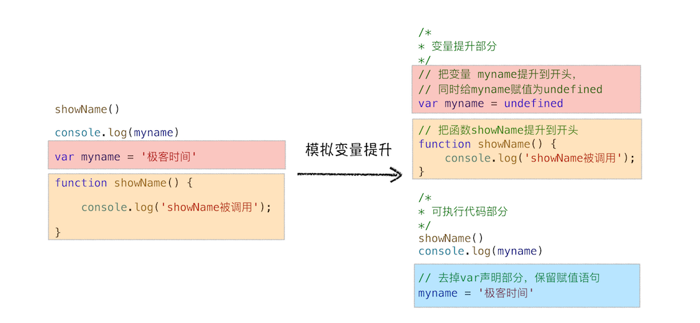

<!DOCTYPE html>


<html lang="zh">


<head>
  <meta charset="utf-8" />
   
  <meta name="keywords" content="hexo blog" />
   
  <meta name="description" content="young blog write my world" />
  
  <meta name="viewport" content="width=device-width, initial-scale=1, maximum-scale=1" />
  <title>
    浏览器中JavaScript的执行机制 |  young blog write my world
  </title>
  <meta name="generator" content="hexo-theme-ayer">
  
  <link rel="shortcut icon" href="/favicon.ico" />
  
  
<link rel="stylesheet" href="/dist/main.css">

  
<link rel="stylesheet" href="https://cdn.jsdelivr.net/gh/Shen-Yu/cdn/css/remixicon.min.css">

  
<link rel="stylesheet" href="/css/custom.css">

  
  
<script src="https://cdn.jsdelivr.net/npm/pace-js@1.0.2/pace.min.js"></script>

  
  

  

</head>

</html>

<body>
  <div id="app">
    
      
    <main class="content on">
      <section class="outer">
  <article
  id="post-浏览器中JavaScript的执行机制"
  class="article article-type-post"
  itemscope
  itemprop="blogPost"
  data-scroll-reveal
>
  <div class="article-inner">
    
    <header class="article-header">
       
<h1 class="article-title sea-center" style="border-left:0" itemprop="name">
  浏览器中JavaScript的执行机制
</h1>
 

    </header>
     
    <div class="article-meta">
      <a href="/2020/09/27/%E6%B5%8F%E8%A7%88%E5%99%A8%E4%B8%ADJavaScript%E7%9A%84%E6%89%A7%E8%A1%8C%E6%9C%BA%E5%88%B6/" class="article-date">
  <time datetime="2020-09-27T13:21:01.000Z" itemprop="datePublished">2020-09-27</time>
</a> 
  <div class="article-category">
    <a class="article-category-link" href="/categories/%E6%B5%8F%E8%A7%88%E5%99%A8/">浏览器</a>
  </div>
  
<div class="word_count">
    <span class="post-time">
        <span class="post-meta-item-icon">
            <i class="ri-quill-pen-line"></i>
            <span class="post-meta-item-text"> Word count:</span>
            <span class="post-count">3.1k</span>
        </span>
    </span>

    <span class="post-time">
        &nbsp; | &nbsp;
        <span class="post-meta-item-icon">
            <i class="ri-book-open-line"></i>
            <span class="post-meta-item-text"> Reading time≈</span>
            <span class="post-count">11 min</span>
        </span>
    </span>
</div>
 
    </div>
      
    <div class="tocbot"></div>


  
    <div class="article-entry" itemprop="articleBody">
       
  <h1 id="函数调用栈"><a href="#函数调用栈" class="headerlink" title="函数调用栈"></a>函数调用栈</h1><h2 id="变量提升（Hoisting）"><a href="#变量提升（Hoisting）" class="headerlink" title="变量提升（Hoisting）"></a>变量提升（Hoisting）</h2><p>JavaScript中，var变量声明会有一个顺序上的提升</p>
<p>比如我们的属性变量：</p>
<p></p>
<p>再比如我们的函数变量：</p>
<p></p>
<figure class="highlight plain"><table><tr><td class="gutter"><pre><span class="line">1</span><br><span class="line">2</span><br><span class="line">3</span><br><span class="line">4</span><br><span class="line">5</span><br><span class="line">6</span><br></pre></td><td class="code"><pre><span class="line">showName()</span><br><span class="line">console.log(myname)</span><br><span class="line">var myname &#x3D; &#39;极客时间&#39;</span><br><span class="line">function showName() &#123;</span><br><span class="line">    console.log(&#39;函数showName被执行&#39;);</span><br><span class="line">&#125;</span><br></pre></td></tr></table></figure>

<p>经过变量提升后，实际的顺序为：</p>
<figure class="highlight plain"><table><tr><td class="gutter"><pre><span class="line">1</span><br><span class="line">2</span><br><span class="line">3</span><br><span class="line">4</span><br><span class="line">5</span><br><span class="line">6</span><br><span class="line">7</span><br></pre></td><td class="code"><pre><span class="line">var myname&#x3D;undefined</span><br><span class="line">function showName()&#123;</span><br><span class="line">		console.log(&#39;函数showName被执行&#39;);</span><br><span class="line">&#125;</span><br><span class="line">showName()</span><br><span class="line">console.log(myname)</span><br><span class="line">myname &#x3D; &#39;极客时间&#39;</span><br></pre></td></tr></table></figure>

<p>如下图示：</p>
<p></p>
<h2 id="执行流程"><a href="#执行流程" class="headerlink" title="执行流程"></a>执行流程</h2><p>从概念的字面意义上来看，“变量提升”意味着变量和函数的声明会在物理层面移动到代码的最前面，正如我们所模拟的那样。但，这并不准确。实际上变量和函数声明在代码里的位置是不会改变的，而且是在编译阶段被JavaScript引擎放入内存中。对，你没听错，一段JavaScript代码在执行之前需要被JavaScript引擎编译，编译完成之后，才会进入执行阶段。大致流程你可以参考下图：</p>
<p></p>
<h3 id="1-编译阶段"><a href="#1-编译阶段" class="headerlink" title="1.编译阶段"></a>1.编译阶段</h3><p>那么编译阶段和变量提升存在什么关系呢？</p>
<p>为了搞清楚这个问题，我们还是回过头来看上面那段模拟变量提升的代码，为了方便介绍，可以把这段代码分成两部分。</p>
<p><strong>第一部分：变量提升部分的代码。</strong></p>
<figure class="highlight js"><table><tr><td class="gutter"><pre><span class="line">1</span><br><span class="line">2</span><br><span class="line">3</span><br><span class="line">4</span><br></pre></td><td class="code"><pre><span class="line"><span class="keyword">var</span> myname = <span class="literal">undefined</span></span><br><span class="line"><span class="function"><span class="keyword">function</span> <span class="title">showName</span>(<span class="params"></span>) </span>&#123;</span><br><span class="line">    <span class="built_in">console</span>.log(<span class="string">&#x27;函数showName被执行&#x27;</span>);</span><br><span class="line">&#125;</span><br></pre></td></tr></table></figure>

<p><strong>第二部分：执行部分的代码。</strong></p>
<figure class="highlight js"><table><tr><td class="gutter"><pre><span class="line">1</span><br><span class="line">2</span><br><span class="line">3</span><br></pre></td><td class="code"><pre><span class="line">showName()</span><br><span class="line"><span class="built_in">console</span>.log(myname)</span><br><span class="line">myname = <span class="string">&#x27;极客时间&#x27;</span></span><br></pre></td></tr></table></figure>

<p>下面我们就可以把JavaScript的执行流程细化，如下图所示：</p>
<p></p>
<p>可以发现，编译阶段，我们的JS代码会被分成执行上下文和可执行代码</p>
<h3 id="2-执行阶段"><a href="#2-执行阶段" class="headerlink" title="2.执行阶段"></a>2.执行阶段</h3><p>JavaScript引擎开始执行“可执行代码”，按照顺序一行一行地执行。下面我们就来一行一行分析下这个执行过程</p>
<ul>
<li>当执行到showName函数时，JavaScript引擎便开始在变量环境对象中查找该函数，由于变量环境对象中存在该函数的引用，所以JavaScript引擎便开始执行该函数，并输出“函数showName被执行”结果。</li>
<li>接下来打印“myname”信息，JavaScript引擎继续在变量环境对象中查找该对象，由于变量环境存在myname变量，并且其值为undefined，所以这时候就输出undefined。</li>
<li>接下来执行第3行，把“极客时间”赋给myname变量，赋值后变量环境中的myname属性值改变为“极客时间”</li>
<li>对于变量名相同的问题，后面的会直接覆盖前面的赋值操作。</li>
</ul>
<h2 id="调用栈"><a href="#调用栈" class="headerlink" title="调用栈"></a>调用栈</h2><p>编译阶段会涉及到函数调用栈</p>
<p><strong>JavaScript引擎正是利用栈的这种结构来管理执行上下文的。在执行上下文创建好后，JavaScript引擎会将执行上下文压入栈中，通常把这种用来管理执行上下文的栈称为执行上下文栈，又称调用栈。</strong></p>
<figure class="highlight plain"><table><tr><td class="gutter"><pre><span class="line">1</span><br><span class="line">2</span><br><span class="line">3</span><br><span class="line">4</span><br><span class="line">5</span><br><span class="line">6</span><br><span class="line">7</span><br><span class="line">8</span><br><span class="line">9</span><br><span class="line">10</span><br></pre></td><td class="code"><pre><span class="line">var a &#x3D; 2</span><br><span class="line">function add(b,c)&#123;</span><br><span class="line">  return b+c</span><br><span class="line">&#125;</span><br><span class="line">function addAll(b,c)&#123;</span><br><span class="line">var d &#x3D; 10</span><br><span class="line">result &#x3D; add(b,c)</span><br><span class="line">return  a+result+d</span><br><span class="line">&#125;</span><br><span class="line">addAll(3,6)</span><br></pre></td></tr></table></figure>

<p>上面这段代码，我们分析一下调用栈的过程</p>
<ul>
<li><p><strong>创建全局上下文，并将其压入栈底</strong>。如下图所示</p>
<p></p>
<p>变量a、函数add和addAll都保存到了全局上下文的变量环境对象中。</p>
<p>紧接着，执行变量赋值和函数执行操作，如下图示</p>
<p></p>
</li>
<li><p><strong>当执行函数addAll时，JS引擎会编译该函数，并为其创建一个执行上下文，压入栈中</strong></p>
<p></p>
<p>同样是，在函数内部，也是先申明，变量提升，再执行</p>
</li>
<li><p>当执行addAll时，内部又会为add函数创建一个执行上下文，押入栈中</p>
<p></p>
<p>当add函数返回时，该函数的执行上下文就会从栈顶弹出，并将result的值设置为add函数的返回值，也就是9</p>
</li>
<li><p>从栈顶执行到栈底，表示整个JavaScript流程执行结束了。</p>
</li>
</ul>
<h1 id="let和const的引入"><a href="#let和const的引入" class="headerlink" title="let和const的引入"></a>let和const的引入</h1><h2 id="块级作用域"><a href="#块级作用域" class="headerlink" title="块级作用域"></a>块级作用域</h2><p>JS的var变量只有函数作用域，这样会引发很多意想不到的问题，这里就不阐述了</p>
<p>ES6中通过let和const关键字，让JS也有了块级作用域</p>
<figure class="highlight js"><table><tr><td class="gutter"><pre><span class="line">1</span><br><span class="line">2</span><br><span class="line">3</span><br><span class="line">4</span><br><span class="line">5</span><br><span class="line">6</span><br><span class="line">7</span><br><span class="line">8</span><br><span class="line">9</span><br><span class="line">10</span><br><span class="line">11</span><br><span class="line">12</span><br><span class="line">13</span><br><span class="line">14</span><br><span class="line">15</span><br></pre></td><td class="code"><pre><span class="line"><span class="function"><span class="keyword">function</span> <span class="title">foo</span>(<span class="params"></span>)</span>&#123;</span><br><span class="line">    <span class="keyword">var</span> a = <span class="number">1</span></span><br><span class="line">    <span class="keyword">let</span> b = <span class="number">2</span></span><br><span class="line">    &#123;</span><br><span class="line">      <span class="keyword">let</span> b = <span class="number">3</span></span><br><span class="line">      <span class="keyword">var</span> c = <span class="number">4</span></span><br><span class="line">      <span class="keyword">let</span> d = <span class="number">5</span></span><br><span class="line">      <span class="built_in">console</span>.log(a)</span><br><span class="line">      <span class="built_in">console</span>.log(b)</span><br><span class="line">    &#125;</span><br><span class="line">    <span class="built_in">console</span>.log(b) </span><br><span class="line">    <span class="built_in">console</span>.log(c)</span><br><span class="line">    <span class="built_in">console</span>.log(d)</span><br><span class="line">&#125;   </span><br><span class="line">foo()</span><br></pre></td></tr></table></figure>

<p>这里的{}中的let变量，只会在该{}中生效，但是var变量却是foo函数中都有效</p>
<h2 id="实现原理"><a href="#实现原理" class="headerlink" title="实现原理"></a>实现原理</h2><blockquote>
<p>通过执行上下文中的词法环境来实现let，const的块级作用域</p>
</blockquote>
<p>我们来分析下上面代码的流程</p>
<h3 id="1-编译并创建执行上下文"><a href="#1-编译并创建执行上下文" class="headerlink" title="1.编译并创建执行上下文"></a>1.编译并创建执行上下文</h3><p></p>
<p>通过上图，我们可以得出以下结论：</p>
<ul>
<li>函数内部通过var声明的变量，在编译阶段全都被存放到变量环境里面了。</li>
<li>通过let声明的变量，在编译阶段会被存放到词法环境（Lexical Environment）中。</li>
<li>在函数的作用域内部，通过let声明的变量并没有被存放到词法环境中。</li>
<li>接下来，第二步继续执行代码，当执行到代码块里面时，变量环境中a的值已经被设置成了1，词法环境中b的值已经被设置成了2。</li>
</ul>
<h3 id="2-代码块变量的执行"><a href="#2-代码块变量的执行" class="headerlink" title="2.代码块变量的执行"></a>2.代码块变量的执行</h3><p>这时候函数的执行上下文就如下图所示：</p>
<p></p>
<ul>
<li>声明的变量执行完后，进入执行阶段</li>
<li>此时外层的let b赋值，代码块执行，变量还是先声明在赋值</li>
</ul>
<p>其实，在词法环境内部，维护了一个小型栈结构，栈底是函数最外层的变量，进入一个作用域块后，就会把该作用域块内部的变量压到栈顶；当作用域执行完成之后，该作用域的信息就会从栈顶弹出，这就是词法环境的结构。需要注意下，我这里所讲的变量是指通过let或者const声明的变量。</p>
<p></p>
<p><strong>当作用域块执行结束之后，其内部定义的变量就会从词法环境的栈顶弹出</strong>，最终执行上下文如下图所示：</p>
<p></p>
<p><strong>这样我们代码块中的变量就实现了只在代码块中起作用。</strong></p>
<h3 id="3-总结"><a href="#3-总结" class="headerlink" title="3.总结"></a>3.总结</h3><p>通过词法环境的小型栈来实现了代码块中let和const变量的块级作用域效果</p>
<h1 id="闭包"><a href="#闭包" class="headerlink" title="闭包"></a>闭包</h1><p>理解作用域链是理解闭包的基础</p>
<h2 id="作用域链"><a href="#作用域链" class="headerlink" title="作用域链"></a>作用域链</h2><p><strong>每个执行上下文的变量环境中，都包含了一个外部引用，用来指向外部的执行上下文，我们把这个外部引用称为outer。</strong></p>
<p>当一段JS代码使用了一个变量时，引擎会在“当前执行上下文”中寻找该变量，如果没有找到，会寻找其外部引用里的“执行上下文”中变量，</p>
<figure class="highlight plain"><table><tr><td class="gutter"><pre><span class="line">1</span><br><span class="line">2</span><br><span class="line">3</span><br><span class="line">4</span><br><span class="line">5</span><br><span class="line">6</span><br><span class="line">7</span><br><span class="line">8</span><br><span class="line">9</span><br></pre></td><td class="code"><pre><span class="line">function bar() &#123;</span><br><span class="line">    console.log(myName)</span><br><span class="line">&#125;</span><br><span class="line">function foo() &#123;</span><br><span class="line">    var myName &#x3D; &quot; 极客邦 &quot;</span><br><span class="line">    bar()</span><br><span class="line">&#125;</span><br><span class="line">var myName &#x3D; &quot; 极客时间 &quot;</span><br><span class="line">foo()</span><br></pre></td></tr></table></figure>

<p>比如上面代码，bar中的myName没有找到，会寻找全局中的myName，分析入下图示：</p>
<p></p>
<p></p>
<p>此时，你可能又会疑惑，为啥bar函数不是引用foo函数里面的myName变量，这就有涉及到外部引用out的引用规则</p>
<h2 id="词法作用域"><a href="#词法作用域" class="headerlink" title="词法作用域"></a>词法作用域</h2><blockquote>
<p>词法作用域就是指作用域是由代码中函数声明的位置来决定的，所以词法作用域是静态的作用域，通过它就能够预测代码在执行过程中如何查找标识符</p>
</blockquote>
<p>看下面这张图：</p>
<p></p>
<p>从图中可以看出，<strong>词法作用域就是根据代码的位置来决定的</strong>，其中 main 函数包含了 bar 函数，bar 函数中包含了 foo 函数，因为 JavaScript 作用域链是由词法作用域决定的，所以整个词法作用域链的顺序是：foo 函数作用域—&gt;bar 函数作用域—&gt;main 函数作用域—&gt; 全局作用域。</p>
<h2 id="块级作用域中变量查找"><a href="#块级作用域中变量查找" class="headerlink" title="块级作用域中变量查找"></a>块级作用域中变量查找</h2><figure class="highlight plain"><table><tr><td class="gutter"><pre><span class="line">1</span><br><span class="line">2</span><br><span class="line">3</span><br><span class="line">4</span><br><span class="line">5</span><br><span class="line">6</span><br><span class="line">7</span><br><span class="line">8</span><br><span class="line">9</span><br><span class="line">10</span><br><span class="line">11</span><br><span class="line">12</span><br><span class="line">13</span><br><span class="line">14</span><br><span class="line">15</span><br><span class="line">16</span><br><span class="line">17</span><br><span class="line">18</span><br><span class="line">19</span><br><span class="line">20</span><br></pre></td><td class="code"><pre><span class="line">function bar() &#123;</span><br><span class="line">    var myName &#x3D; &quot; 极客世界 &quot;</span><br><span class="line">    let test1 &#x3D; 100</span><br><span class="line">    if (1) &#123;</span><br><span class="line">        let myName &#x3D; &quot;Chrome 浏览器 &quot;</span><br><span class="line">        console.log(test)</span><br><span class="line">    &#125;</span><br><span class="line">&#125;</span><br><span class="line">function foo() &#123;</span><br><span class="line">    var myName &#x3D; &quot; 极客邦 &quot;</span><br><span class="line">    let test &#x3D; 2</span><br><span class="line">    &#123;</span><br><span class="line">        let test &#x3D; 3</span><br><span class="line">        bar()</span><br><span class="line">    &#125;</span><br><span class="line">&#125;</span><br><span class="line">var myName &#x3D; &quot; 极客时间 &quot;</span><br><span class="line">let myAge &#x3D; 10</span><br><span class="line">let test &#x3D; 1</span><br><span class="line">foo()</span><br></pre></td></tr></table></figure>

<p>直接上图：</p>
<p></p>
<p>也是正常的理解：顺序为 ：自己的块级作用域-&gt;自己的上下文变量环境-&gt;out的块级作用域-&gt;out上下文变量环境</p>
<h2 id="闭包-1"><a href="#闭包-1" class="headerlink" title="闭包"></a>闭包</h2><p>闭包的最直观解释就是函数内嵌套了函数，并且内部函数引用了外部函数的变量</p>
<p>我们来看下面的代码</p>
<figure class="highlight plain"><table><tr><td class="gutter"><pre><span class="line">1</span><br><span class="line">2</span><br><span class="line">3</span><br><span class="line">4</span><br><span class="line">5</span><br><span class="line">6</span><br><span class="line">7</span><br><span class="line">8</span><br><span class="line">9</span><br><span class="line">10</span><br><span class="line">11</span><br><span class="line">12</span><br><span class="line">13</span><br><span class="line">14</span><br><span class="line">15</span><br><span class="line">16</span><br><span class="line">17</span><br><span class="line">18</span><br><span class="line">19</span><br></pre></td><td class="code"><pre><span class="line">function foo() &#123;</span><br><span class="line">    var myName &#x3D; &quot; 极客时间 &quot;</span><br><span class="line">    let test1 &#x3D; 1</span><br><span class="line">    const test2 &#x3D; 2</span><br><span class="line">    var innerBar &#x3D; &#123;</span><br><span class="line">        getName:function()&#123;</span><br><span class="line">            console.log(test1)</span><br><span class="line">            return myName</span><br><span class="line">        &#125;,</span><br><span class="line">        setName:function(newName)&#123;</span><br><span class="line">            myName &#x3D; newName</span><br><span class="line">        &#125;</span><br><span class="line">    &#125;</span><br><span class="line">    return innerBar</span><br><span class="line">&#125;</span><br><span class="line">var bar &#x3D; foo()</span><br><span class="line">bar.setName(&quot; 极客邦 &quot;)</span><br><span class="line">bar.getName()</span><br><span class="line">console.log(bar.getName())</span><br></pre></td></tr></table></figure>

<p>首先我们看看当执行到 foo 函数内部的return innerBar这行代码时调用栈的情况，你可以参考下图：</p>
<p></p>
<p>根据词法作用域的规则，内部函数 getName 和 setName 总是可以访问它们的外部函数 foo 中的变量，所以当 innerBar 对象返回给全局变量 bar 时，虽然 foo 函数已经执行结束，但是 getName 和 setName 函数依然可以使用 foo 函数中的变量 myName 和 test1。所以当 foo 函数执行完成之后，其整个调用栈的状态如下图所示：</p>
<p></p>
<p>从上图可以看出，foo 函数执行完成之后，其执行上下文从栈顶弹出了，但是由于返回的 setName 和 getName 方法中使用了 foo 函数内部的变量 myName 和 test1，所以这两个变量依然保存在内存中。这像极了 setName 和 getName 方法背的一个专属背包，无论在哪里调用了 setName 和 getName 方法，它们都会背着这个 foo 函数的专属背包。</p>
<p>之所以是专属背包，是因为除了 setName 和 getName 函数之外，其他任何地方都是无法访问该背包的，我们就可以把这个背包称为 foo 函数的<strong>闭包</strong>。</p>
<ul>
<li><strong>在 JavaScript 中，根据词法作用域的规则，内部函数总是可以访问其外部函数中声明的变量，当通过调用一个外部函数返回一个内部函数后，即使该外部函数已经执行结束了，但是内部函数引用外部函数的变量依然保存在内存中，我们就把这些变量的集合称为闭包</strong></li>
</ul>
<p>那这些闭包是如何使用的呢？当执行到 bar.setName 方法中的myName = “极客邦”这句代码时，JavaScript 引擎会沿着“当前执行上下文–&gt;foo 函数闭包–&gt; 全局执行上下文”的顺序来查找 myName 变量，你可以参考下面的调用栈状态图：</p>
<p></p>
<h1 id="this的认识"><a href="#this的认识" class="headerlink" title="this的认识"></a>this的认识</h1><p>关于 this，我们还是得先从执行上下文说起。在前面几篇文章中，我们提到执行上下文中包含了变量环境、词法环境、外部环境，但其实还有一个 this 没有提及，具体你可以参考下图：</p>
<p></p>
<p>从图中可以看出，this 是和执行上下文绑定的，也就是说每个执行上下文中都有一个 this。中我们提到过，执行上下文主要分为三种——全局执行上下文、函数执行上下文和 eval 执行上下文，所以对应的 this 也只有这三种——全局执行上下文中的 this、函数中的 this 和 eval 中的 this。</p>
<p>实际上，this是不固定的，一般而言，<strong>对象.方法</strong>使用的时候，函数中this指向的就是该对象，如果是直接调用，一般默认都是window对象</p>
<p>比如，如下代码</p>
<figure class="highlight plain"><table><tr><td class="gutter"><pre><span class="line">1</span><br><span class="line">2</span><br><span class="line">3</span><br><span class="line">4</span><br><span class="line">5</span><br><span class="line">6</span><br><span class="line">7</span><br><span class="line">8</span><br><span class="line">9</span><br></pre></td><td class="code"><pre><span class="line">var myObj &#x3D; &#123;</span><br><span class="line">  name : &quot; 极客时间 &quot;, </span><br><span class="line">  showThis: function()&#123;</span><br><span class="line">    console.log(this)</span><br><span class="line">    function bar()&#123;console.log(this)&#125;</span><br><span class="line">    bar()</span><br><span class="line">  &#125;</span><br><span class="line">&#125;</span><br><span class="line">myObj.showThis()</span><br></pre></td></tr></table></figure>

<p>可以看到，showThis由myObj调用，所以this就是myObj，但是showThis内部的函数bar被调用的时候，前面没有对象引用，默认是window，所以bar函数中的this指向的就是window</p>
<h2 id="避免this问题"><a href="#避免this问题" class="headerlink" title="避免this问题"></a>避免this问题</h2><ul>
<li>call，bind，apply</li>
<li>定义变量改变，比如外部定义变量 let that=this</li>
<li>使用箭头函数</li>
</ul>
 
      <!-- reward -->
      
      <div id="reword-out">
        <div id="reward-btn">
          Donate
        </div>
      </div>
      
    </div>
    

    <!-- copyright -->
    
    <div class="declare">
      <ul class="post-copyright">
        <li>
          <i class="ri-copyright-line"></i>
          <strong>Copyright： </strong>
          
          Copyright is owned by the author. For commercial reprints, please contact the author for authorization. For non-commercial reprints, please indicate the source.
          
        </li>
      </ul>
    </div>
    
    <footer class="article-footer">
       
<div class="share-btn">
      <span class="share-sns share-outer">
        <i class="ri-share-forward-line"></i>
        分享
      </span>
      <div class="share-wrap">
        <i class="arrow"></i>
        <div class="share-icons">
          
          <a class="weibo share-sns" href="javascript:;" data-type="weibo">
            <i class="ri-weibo-fill"></i>
          </a>
          <a class="weixin share-sns wxFab" href="javascript:;" data-type="weixin">
            <i class="ri-wechat-fill"></i>
          </a>
          <a class="qq share-sns" href="javascript:;" data-type="qq">
            <i class="ri-qq-fill"></i>
          </a>
          <a class="douban share-sns" href="javascript:;" data-type="douban">
            <i class="ri-douban-line"></i>
          </a>
          <!-- <a class="qzone share-sns" href="javascript:;" data-type="qzone">
            <i class="icon icon-qzone"></i>
          </a> -->
          
          <a class="facebook share-sns" href="javascript:;" data-type="facebook">
            <i class="ri-facebook-circle-fill"></i>
          </a>
          <a class="twitter share-sns" href="javascript:;" data-type="twitter">
            <i class="ri-twitter-fill"></i>
          </a>
          <a class="google share-sns" href="javascript:;" data-type="google">
            <i class="ri-google-fill"></i>
          </a>
        </div>
      </div>
</div>

<div class="wx-share-modal">
    <a class="modal-close" href="javascript:;"><i class="ri-close-circle-line"></i></a>
    <p>扫一扫，分享到微信</p>
    <div class="wx-qrcode">
      
    </div>
</div>

<div id="share-mask"></div>  
  <ul class="article-tag-list" itemprop="keywords"><li class="article-tag-list-item"><a class="article-tag-list-link" href="/tags/JavaScript/" rel="tag">JavaScript</a></li><li class="article-tag-list-item"><a class="article-tag-list-link" href="/tags/%E6%B5%8F%E8%A7%88%E5%99%A8/" rel="tag">浏览器</a></li></ul>

    </footer>
  </div>

   
  <nav class="article-nav">
    
      <a href="/2020/09/29/%E6%B5%8F%E8%A7%88%E5%99%A8%E7%9A%84%E4%BA%8B%E4%BB%B6%E5%BE%AA%E7%8E%AF%E6%9C%BA%E5%88%B6/" class="article-nav-link">
        <strong class="article-nav-caption">上一篇</strong>
        <div class="article-nav-title">
          
            浏览器的事件循环机制
          
        </div>
      </a>
    
    
      <a href="/2020/09/23/%E6%B5%8F%E8%A7%88%E5%99%A8%E6%B8%B2%E6%9F%93%E8%BF%9B%E7%A8%8B%E5%88%86%E6%9E%90/" class="article-nav-link">
        <strong class="article-nav-caption">下一篇</strong>
        <div class="article-nav-title">浏览器渲染进程分析</div>
      </a>
    
  </nav>

   
<!-- valine评论 -->
<div id="vcomments-box">
  <div id="vcomments"></div>
</div>
<script src="//cdn1.lncld.net/static/js/3.0.4/av-min.js"></script>
<script src="https://cdn.jsdelivr.net/npm/valine@1.4.14/dist/Valine.min.js"></script>
<script>
  new Valine({
    el: "#vcomments",
    app_id: "",
    app_key: "",
    path: window.location.pathname,
    avatar: "monsterid",
    placeholder: "给我的文章加点评论吧~",
    recordIP: true,
  });
  const infoEle = document.querySelector("#vcomments .info");
  if (infoEle && infoEle.childNodes && infoEle.childNodes.length > 0) {
    infoEle.childNodes.forEach(function (item) {
      item.parentNode.removeChild(item);
    });
  }
</script>
<style>
  #vcomments-box {
    padding: 5px 30px;
  }

  @media screen and (max-width: 800px) {
    #vcomments-box {
      padding: 5px 0px;
    }
  }

  #vcomments-box #vcomments {
    background-color: #fff;
  }

  .v .vlist .vcard .vh {
    padding-right: 20px;
  }

  .v .vlist .vcard {
    padding-left: 10px;
  }
</style>

 
     
</article>

</section>
      <footer class="footer">
  <div class="outer">
    <ul>
      <li>
        Copyrights &copy;
        2015-2020
        <i class="ri-heart-fill heart_icon"></i> YOUNG
      </li>
    </ul>
    <ul>
      <li>
        
        
        
        Powered by <a href="https://hexo.io" target="_blank">Hexo</a>
        <span class="division">|</span>
        Theme - <a href="https://github.com/Shen-Yu/hexo-theme-ayer" target="_blank">Ayer</a>
        
      </li>
    </ul>
    <ul>
      <li>
        
        
        <span>
  <span><i class="ri-user-3-fill"></i>Visitors:<span id="busuanzi_value_site_uv"></span></s>
  <span class="division">|</span>
  <span><i class="ri-eye-fill"></i>Views:<span id="busuanzi_value_page_pv"></span></span>
</span>
        
      </li>
    </ul>
    <ul>
      
    </ul>
    <ul>
      
    </ul>
    <ul>
      <li>
        <!-- cnzz统计 -->
        
        <script type="text/javascript" src=''></script>
        
      </li>
    </ul>
  </div>
</footer>
      <div class="float_btns">
        <div class="totop" id="totop">
  <i class="ri-arrow-up-line"></i>
</div>

<div class="todark" id="todark">
  <i class="ri-moon-line"></i>
</div>

      </div>
    </main>
    <aside class="sidebar on">
      <button class="navbar-toggle"></button>
<nav class="navbar">
  
  <div class="logo">
    <a href="/"></a>
  </div>
  
  <ul class="nav nav-main">
    
    <li class="nav-item">
      <a class="nav-item-link" href="/">主页</a>
    </li>
    
    <li class="nav-item">
      <a class="nav-item-link" href="/archives">归档</a>
    </li>
    
    <li class="nav-item">
      <a class="nav-item-link" href="/categories">分类</a>
    </li>
    
    <li class="nav-item">
      <a class="nav-item-link" href="/tags">标签</a>
    </li>
    
    <li class="nav-item">
      <a class="nav-item-link" href="/tags/%E6%97%85%E8%A1%8C/">旅行</a>
    </li>
    
    <li class="nav-item">
      <a class="nav-item-link" target="_blank" rel="noopener" href="http://shenyu-vip.lofter.com">摄影</a>
    </li>
    
    <li class="nav-item">
      <a class="nav-item-link" href="/friends">友链</a>
    </li>
    
    <li class="nav-item">
      <a class="nav-item-link" href="/2019/about">关于我</a>
    </li>
    
  </ul>
</nav>
<nav class="navbar navbar-bottom">
  <ul class="nav">
    <li class="nav-item">
      
      <a class="nav-item-link nav-item-search"  title="Search">
        <i class="ri-search-line"></i>
      </a>
      
      
      <a class="nav-item-link" target="_blank" href="/atom.xml" title="RSS Feed">
        <i class="ri-rss-line"></i>
      </a>
      
    </li>
  </ul>
</nav>
<div class="search-form-wrap">
  <div class="local-search local-search-plugin">
  <input type="search" id="local-search-input" class="local-search-input" placeholder="Search...">
  <div id="local-search-result" class="local-search-result"></div>
</div>
</div>
    </aside>
    <script>
      if (window.matchMedia("(max-width: 768px)").matches) {
        document.querySelector('.content').classList.remove('on');
        document.querySelector('.sidebar').classList.remove('on');
      }
    </script>
    <div id="mask"></div>

<!-- #reward -->
<div id="reward">
  <span class="close"><i class="ri-close-line"></i></span>
  <p class="reward-p"><i class="ri-cup-line"></i>请我喝杯咖啡吧~</p>
  <div class="reward-box">
    
    
  </div>
</div>
    
<script src="/js/jquery-2.0.3.min.js"></script>


<script src="/js/lazyload.min.js"></script>

<!-- Tocbot -->


<script src="/js/tocbot.min.js"></script>

<script>
  tocbot.init({
    tocSelector: '.tocbot',
    contentSelector: '.article-entry',
    headingSelector: 'h1, h2, h3, h4, h5, h6',
    hasInnerContainers: true,
    scrollSmooth: true,
    scrollContainer: 'main',
    positionFixedSelector: '.tocbot',
    positionFixedClass: 'is-position-fixed',
    fixedSidebarOffset: 'auto'
  });
</script>

<script src="https://cdn.jsdelivr.net/npm/jquery-modal@0.9.2/jquery.modal.min.js"></script>
<link rel="stylesheet" href="https://cdn.jsdelivr.net/npm/jquery-modal@0.9.2/jquery.modal.min.css">
<script src="https://cdn.jsdelivr.net/npm/justifiedGallery@3.7.0/dist/js/jquery.justifiedGallery.min.js"></script>

<script src="/dist/main.js"></script>

<!-- ImageViewer -->

<!-- Root element of PhotoSwipe. Must have class pswp. -->
<div class="pswp" tabindex="-1" role="dialog" aria-hidden="true">

    <!-- Background of PhotoSwipe. 
         It's a separate element as animating opacity is faster than rgba(). -->
    <div class="pswp__bg"></div>

    <!-- Slides wrapper with overflow:hidden. -->
    <div class="pswp__scroll-wrap">

        <!-- Container that holds slides. 
            PhotoSwipe keeps only 3 of them in the DOM to save memory.
            Don't modify these 3 pswp__item elements, data is added later on. -->
        <div class="pswp__container">
            <div class="pswp__item"></div>
            <div class="pswp__item"></div>
            <div class="pswp__item"></div>
        </div>

        <!-- Default (PhotoSwipeUI_Default) interface on top of sliding area. Can be changed. -->
        <div class="pswp__ui pswp__ui--hidden">

            <div class="pswp__top-bar">

                <!--  Controls are self-explanatory. Order can be changed. -->

                <div class="pswp__counter"></div>

                <button class="pswp__button pswp__button--close" title="Close (Esc)"></button>

                <button class="pswp__button pswp__button--share" style="display:none" title="Share"></button>

                <button class="pswp__button pswp__button--fs" title="Toggle fullscreen"></button>

                <button class="pswp__button pswp__button--zoom" title="Zoom in/out"></button>

                <!-- Preloader demo http://codepen.io/dimsemenov/pen/yyBWoR -->
                <!-- element will get class pswp__preloader--active when preloader is running -->
                <div class="pswp__preloader">
                    <div class="pswp__preloader__icn">
                        <div class="pswp__preloader__cut">
                            <div class="pswp__preloader__donut"></div>
                        </div>
                    </div>
                </div>
            </div>

            <div class="pswp__share-modal pswp__share-modal--hidden pswp__single-tap">
                <div class="pswp__share-tooltip"></div>
            </div>

            <button class="pswp__button pswp__button--arrow--left" title="Previous (arrow left)">
            </button>

            <button class="pswp__button pswp__button--arrow--right" title="Next (arrow right)">
            </button>

            <div class="pswp__caption">
                <div class="pswp__caption__center"></div>
            </div>

        </div>

    </div>

</div>

<link rel="stylesheet" href="https://cdn.jsdelivr.net/npm/photoswipe@4.1.3/dist/photoswipe.min.css">
<link rel="stylesheet" href="https://cdn.jsdelivr.net/npm/photoswipe@4.1.3/dist/default-skin/default-skin.min.css">
<script src="https://cdn.jsdelivr.net/npm/photoswipe@4.1.3/dist/photoswipe.min.js"></script>
<script src="https://cdn.jsdelivr.net/npm/photoswipe@4.1.3/dist/photoswipe-ui-default.min.js"></script>

<script>
    function viewer_init() {
        let pswpElement = document.querySelectorAll('.pswp')[0];
        let $imgArr = document.querySelectorAll(('.article-entry img:not(.reward-img)'))

        $imgArr.forEach(($em, i) => {
            $em.onclick = () => {
                // slider展开状态
                // todo: 这样不好，后面改成状态
                if (document.querySelector('.left-col.show')) return
                let items = []
                $imgArr.forEach(($em2, i2) => {
                    let img = $em2.getAttribute('data-idx', i2)
                    let src = $em2.getAttribute('data-target') || $em2.getAttribute('src')
                    let title = $em2.getAttribute('alt')
                    // 获得原图尺寸
                    const image = new Image()
                    image.src = src
                    items.push({
                        src: src,
                        w: image.width || $em2.width,
                        h: image.height || $em2.height,
                        title: title
                    })
                })
                var gallery = new PhotoSwipe(pswpElement, PhotoSwipeUI_Default, items, {
                    index: parseInt(i)
                });
                gallery.init()
            }
        })
    }
    viewer_init()
</script>

<!-- MathJax -->

<!-- Katex -->

<!-- busuanzi  -->


<script src="/js/busuanzi-2.3.pure.min.js"></script>


<!-- ClickLove -->

<!-- ClickBoom1 -->

<!-- ClickBoom2 -->

<!-- CodeCopy -->


<link rel="stylesheet" href="/css/clipboard.css">

<script src="https://cdn.jsdelivr.net/npm/clipboard@2/dist/clipboard.min.js"></script>
<script>
  function wait(callback, seconds) {
    var timelag = null;
    timelag = window.setTimeout(callback, seconds);
  }
  !function (e, t, a) {
    var initCopyCode = function(){
      var copyHtml = '';
      copyHtml += '<button class="btn-copy" data-clipboard-snippet="">';
      copyHtml += '<i class="ri-file-copy-2-line"></i><span>COPY</span>';
      copyHtml += '</button>';
      $(".highlight .code pre").before(copyHtml);
      $(".article pre code").before(copyHtml);
      var clipboard = new ClipboardJS('.btn-copy', {
        target: function(trigger) {
          return trigger.nextElementSibling;
        }
      });
      clipboard.on('success', function(e) {
        let $btn = $(e.trigger);
        $btn.addClass('copied');
        let $icon = $($btn.find('i'));
        $icon.removeClass('ri-file-copy-2-line');
        $icon.addClass('ri-checkbox-circle-line');
        let $span = $($btn.find('span'));
        $span[0].innerText = 'COPIED';
        
        wait(function () { // 等待两秒钟后恢复
          $icon.removeClass('ri-checkbox-circle-line');
          $icon.addClass('ri-file-copy-2-line');
          $span[0].innerText = 'COPY';
        }, 2000);
      });
      clipboard.on('error', function(e) {
        e.clearSelection();
        let $btn = $(e.trigger);
        $btn.addClass('copy-failed');
        let $icon = $($btn.find('i'));
        $icon.removeClass('ri-file-copy-2-line');
        $icon.addClass('ri-time-line');
        let $span = $($btn.find('span'));
        $span[0].innerText = 'COPY FAILED';
        
        wait(function () { // 等待两秒钟后恢复
          $icon.removeClass('ri-time-line');
          $icon.addClass('ri-file-copy-2-line');
          $span[0].innerText = 'COPY';
        }, 2000);
      });
    }
    initCopyCode();
  }(window, document);
</script>


<!-- CanvasBackground -->


    
  </div>
</body>

</html>